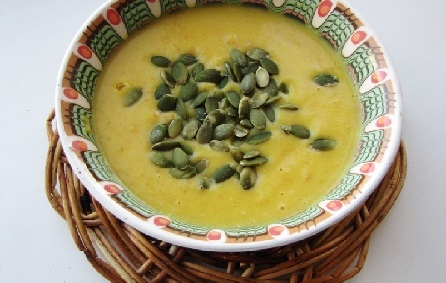

Рецепты

Ингредиенты:
Тыква 500 г, морковь 1 шт, лук-шалот 1 шт, кокосовое молоко 17-19% 400 мл,чеснок 2 зубчика, карри 1 ч. л., лавровый лист 3 шт, перец по вкусу, соль по вкусу.
Рецепт:
1. Тыкву очистить, удалить семена и нарезать мякоть на кубики.
2. Лук-шалот и морковь очистить, нарезать мелкими кубиками. Чеснок очистить и нарезать.
3. Все овощи поместить в кастрюлю, добавить карри, лавровый лист, перец и соль по вкусу. Овощи на 2/3 объема кастрюли залить водой и поставить на огонь. Довести до кипения и варить 20 минут.
4. Снять с огня, вынуть лавровый лист, добавить подогретое кокосовое молоко и взбить суп погружным блендером.
5. Подавать горячим, украсить тыквенными семечками.
Готово!

13 ноября, 2022 года.